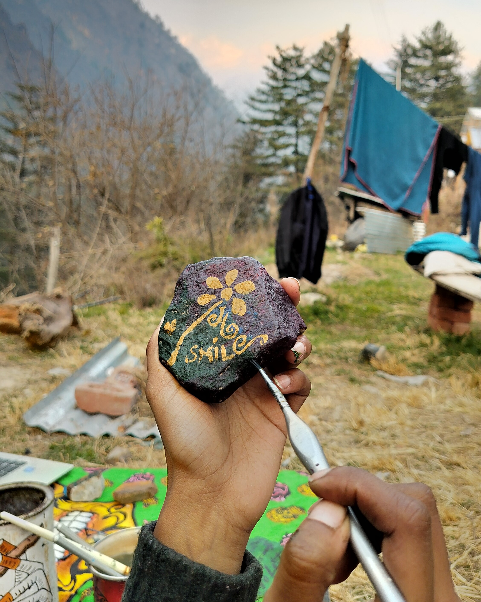

Experienced the best of Kasol with a dual adventure: trek to the serene heights of Gargi Hills and the mystical beauty of Kheerganga. Traverse through lush forests, cascading waterfalls, and panoramic vistas of the Himalayas. Refreshed our senses in Kheerganga's natural hot springs, a perfect finale to your mountain escapade.
I use nature's canvas i.e., rock painting, where art meets the raw beauty of the Earth.
.jpg)
I am an avid yoga practitioner who finds peace and balance through the practice. Alongside my passion for yoga, I'm deeply involved as a volunteer in the Art of Living organization. Throughout the challenges of the COVID-19 pandemic, I have dedicated your time to volunteering in numerous happiness programs, spreading positivity and support to those in need.
Passionate about exploring the world, I thrive on adventure trekking, cultural immersion, and photography expeditions. Embracing diverse experiences that foster personal growth and global citizenship. Advocating for sustainable tourism, I seek to preserve the planet's beauty while delving into its rich history and heritage.